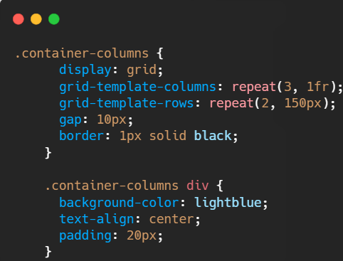

Choisir le nombre de grilles et de colonnes
Exemple de Grille
Colonne 1
Colonne 2
Colonne 3
Ligne 1
Ligne 2
Ici, 3 colonnes égales en largeur et 2 lignes de 150px de hauteur chacune.
Avantage : La propriété repeat rend la syntaxe plus concise.

Suivant